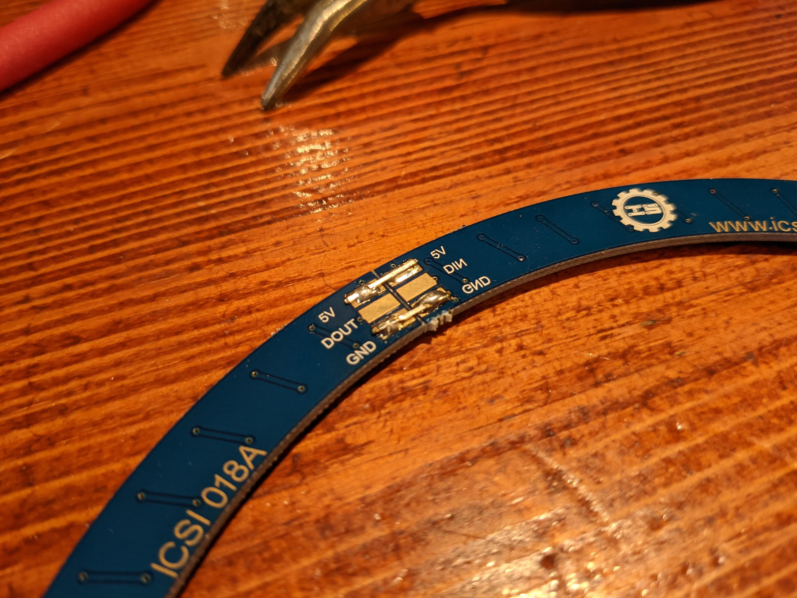
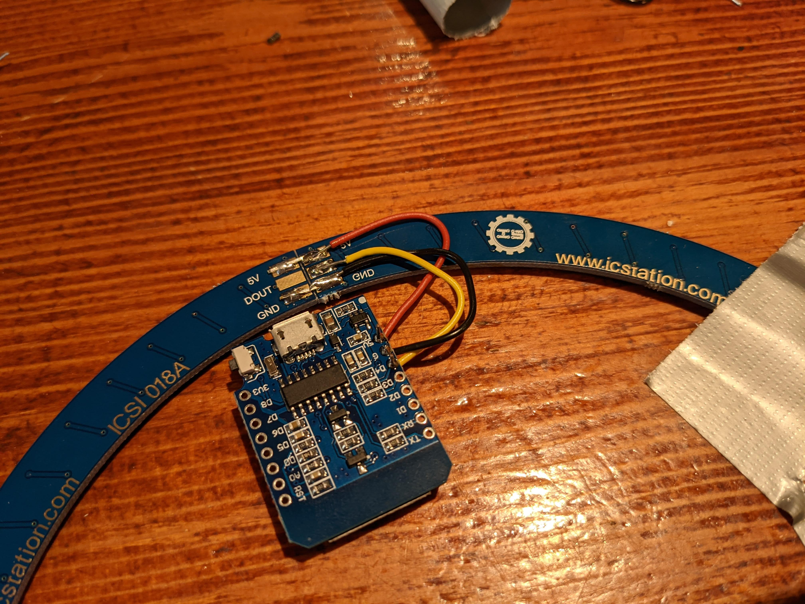

Ledring
We beginnen met de leukste stap, het solderen van de ledring!
Ring solderen
We raden aan om de ledring op tafel vast te plakken voordat je begint met solderen. Je hebt als het goed is een strip met metalen pinnetjes gekregen. Die kun je uit de strip trekken en op de ring solderen. Verbind alle GND en 5V vlakken met elkaar. Verbind ook de DIN en DOUT vlakken met elkaar voor de data verbinding op één na. Dit zal straks het begin en einde van de ledring zijn. Het solderen van de ledring is best een priegel werkje, in deze video kun je wat tips zien hoe je dit het beste doet.

In deze closeup kun je de verbindingen zien. Hier zie je het begin en einde van de ledring.

Ring aansluiten
Vervolgens moet de ledring aangesloten worden op de ESP. Soldeer daarvoor draden tussen de GND pin van de ESP en het GND vlak van de ledring, de 5V pin van de ESP en het 5V vlak van de ledring. Voor de dataoverdracht tussen de ledring en de ESP moet je een draad solderen tussen de D4 pin van de ESP en het DIN vlak van de ledring. Let goed op dat deze draad niet per ongeluk het DOUT vlak raakt want dan werkt de ring niet.
